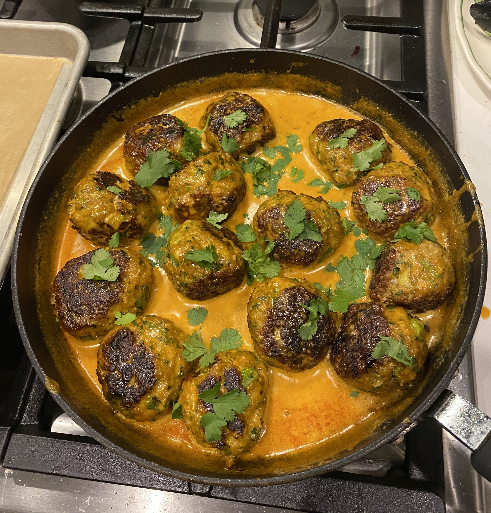
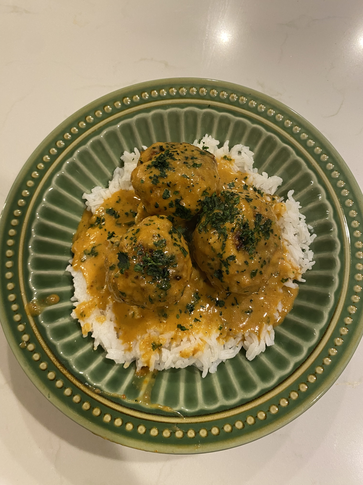

This recipe comes from @saltandsagenutrition on TikTok.
Thai-inspired Meatballs
These meatballs are such a comforting dish when it's a little colder outside. They're easy to make, super flavorful, and are just as good reheated the next day.
Prep time
Cook time
Total time
20 minutes
30 minutes
50 minutes

Ingredients:
1 lb ground chicken
1 egg
4 cloves minced garlic
1 tablespoon fish sauce
4 tablespoons red curry paste
use half for the meatballs, and half for the curry sauce
1/4 cup minced green onion
1/4 cup minced shallot
1 teaspoon sriracha
1 cup breadcrumbs
2 tablespoons olive oil
2 tablespoons sesame oil
13.5 oz (1 can) coconut milk
2 tablespoons peanut butter
1 tablespoon brown sugar
1 cup freshly minced cilantro
Smoked paprika, red pepper flakes, salt, and pepper to taste
Directions:
Preheat your oven to 400 degrees.
Combine your chicken, egg, garlic, fish sauce, 2 tablespoons red curry paste, green onion, shallot, 1/2 cup minced cilantro, sriracha, smoked paprika, salt, and pepper to a bowl.
Slowly add in your breadcrumbs and mix together until the mixture is no longer sticky. Roll into meatballs.
Add your olive oil to a pan over medium heat. Once heated, add your meatballs and cook for a few minutes on each side until browned.
Place your meatballs on a parchment paper lined baking sheet. Cook them in the oven for around 15 minutes or until they have reached an internal temperature of 165 degrees F.
While your meatballs are cooking, combine your sesame oil and the other 2 tablespoons of red curry in your pan. Whisk and heat for about 2-3 minutes.
Add in your coconut milk, peanut butter, brown sugar, 1/3 cup of minced cilantro, and salt, pepper, and red pepper flakes.
Whisk for about 10 minutes until your sauce thickens. Take your meatballs out when cooked and add them into the sauce to coat.
Top with some more minced cilantro and red pepper flakes.